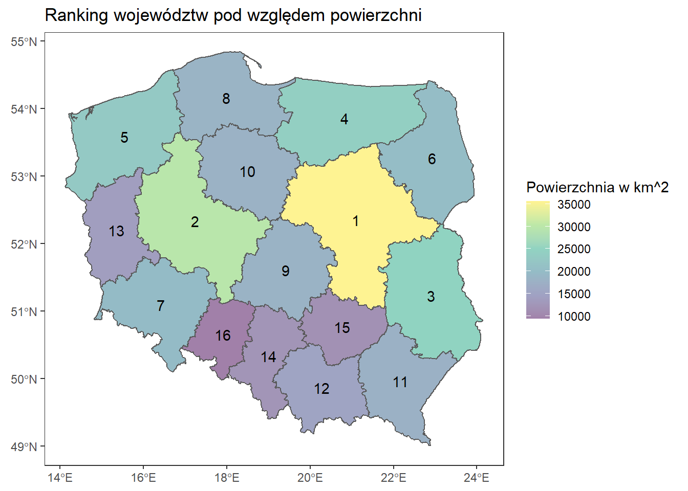

Dane
Wgranie potrzebnych bibliotek.
library(ggplot2)
library(sf)
library(dplyr)
library(rnaturalearth)
library(rnaturalearthdata)
library(ggspatial)
library(maps)
library(tools)
library(lwgeom)
library(ggrepel)
library(cowplot)
library(PogromcyDanych)
library(patchwork)Wgranie mapki swiata, Polski oraz ustawienie motywu domyslnego. Mapa zostaa pobrana z strony (GADM)
theme_set(theme_bw())
#Wgranie mapy świata jako obiekt klasy sF
world <- ne_countries(scale = "medium", returnclass = "sf")
#Wczytanie mapy polski, wraz z wojewódzstwami
polska <- readRDS("C:/R/MAPA/DlaR/gadm36_POL_1_sf.rds")
class(polska)## [1] "sf" "data.frame"#Wczytanie samego obrysu polski
obrys <- readRDS("C:/R/MAPA/DlaR/gadm36_POL_0_sf.rds")Rysujemy.
Mapa polski z podpisanymi regionami.
#Przypisanie pod zmienną puntow centralnych
polska <- cbind(polska, st_coordinates(st_centroid(polska$geometry)))
# Mapa Polski z podpisanymi wojewódzstwami
ggplot(data = polska)+
geom_sf(fill = NA, alpha = 0.4)+
geom_point(data = polska, aes(x=X, y=Y), color = "royalblue4")+
geom_text(data = polska,
aes(x= X, y= Y, label= NAME_1),
nudge_y = 0.2,
fontface = "bold",
color = "royalblue")+
labs(title = "Polska", x = "Szerokość geograficzna", y= "Długość geograficzna")+
theme(panel.grid.major = element_blank())+
coord_sf(xlim = c(13.5,24))
Najwieksze województwo.
Wyznaczenie najwiekszego wojewodztwa. st_area() –> Liczy domyslnie powierzchnie w m^2.
#Liczy powierzchnie, przeksztalcenie na km^2
polska$area <- (as.numeric(st_area(polska))/1000**2)
# Df
only_area <- data.frame(nazwy = polska$NAME_1, pow = polska$area)
only_area## nazwy pow
## 1 Dolnośląskie 19906.786
## 2 Kujawsko-Pomorskie 17971.461
## 3 Łódzkie 18218.864
## 4 Lubelskie 25088.619
## 5 Lubuskie 13987.686
## 6 Małopolskie 15157.506
## 7 Mazowieckie 35558.772
## 8 Opolskie 9402.608
## 9 Podkarpackie 17808.734
## 10 Podlaskie 20155.032
## 11 Pomorskie 18321.666
## 12 Śląskie 12305.589
## 13 Świętokrzyskie 11708.795
## 14 Warmińsko-Mazurskie 24139.757
## 15 Wielkopolskie 29826.763
## 16 Zachodniopomorskie 22841.423#Posortowanie obszarow malejaco i przypisanie miejsc
polska <- polska %>%
arrange(desc(area)) %>%
mutate(miejsce = c(1:nrow(only_area)))
#Mapka
ggplot(data = polska)+
geom_sf(aes(fill = area))+
scale_fill_viridis_c(option = "D", alpha = 0.5, name = "Powierzchnia w km^2")+
geom_text(aes(x= X, y= Y, label= miejsce))+
labs(title = "Ranking województw pod względem powierzchni")+
theme(panel.grid = element_blank(),
axis.title.x = element_blank(),
axis.title.y = element_blank())
Wyniki wyborów
Dane pobrane z strony wybory.gov.pl
## Dane pobrane ze strony. Problem z odkodowaniem. encoding = "UTF-8" załatwia sprawe
wyniki_wojewodztwo <- read.csv("C:/R/NAUKA/Dane/wyniki_gl_na_kand_po_wojewodztwach_proc_utf8.csv", header = TRUE, sep = ";", encoding = "UTF-8")
## Pokazanie wyników poszczególnych kandytatów
wyniki <- wyniki_wojewodztwo %>%
select(Województwo, X..głosów.ważnych, Rafał.Kazimierz.TRZASKOWSKI, Andrzej.Sebastian.DUDA, Krzysztof.BOSAK, Szymon.Franciszek.HOŁOWNIA)
head(wyniki)## Województwo X..głosów.ważnych Rafał.Kazimierz.TRZASKOWSKI
## 1 dolnośląskie 99,68 35,92
## 2 kujawsko-pomorskie 99,71 33,59
## 3 lubelskie 99,67 19,32
## 4 lubuskie 99,68 36,94
## 5 łódzkie 99,68 28,74
## 6 małopolskie 99,73 23,92
## Andrzej.Sebastian.DUDA Krzysztof.BOSAK Szymon.Franciszek.HOŁOWNIA
## 1 38,21 6,44 14,09
## 2 39,54 5,88 15,46
## 3 56,67 7,99 10,45
## 4 34,19 6,07 17,87
## 5 46,63 6,15 12,92
## 6 51,11 7,76 11,54## Zamiana char na numeric
# Dziwne ze gsub bez nawiasow ale działa
wyniki[,c(2:6)] <- lapply(wyniki[,c(2:6)], gsub, pattern = ",", replacement = ".")
wyniki[,c(2:6)] <- lapply(wyniki[,c(2:6)], as.numeric)
## Zmiany nazwy na dużą litere
wyniki$Województwo <- toTitleCase(wyniki$Województwo)
## Porównanie nazw województ w 2 zbiorach
as.data.frame(sort(wyniki$Województwo), sort(polska$NAME_1))## sort(wyniki$Województwo)
## Dolnośląskie Dolnośląskie
## Kujawsko-Pomorskie Kujawsko-Pomorskie
## Lubelskie Lubelskie
## Lubuskie Lubuskie
## Łódzkie Łódzkie
## Małopolskie Małopolskie
## Mazowieckie Mazowieckie
## Opolskie Opolskie
## Podkarpackie Podkarpackie
## Podlaskie Podlaskie
## Pomorskie Pomorskie
## Śląskie Śląskie
## Świętokrzyskie Świętokrzyskie
## Warmińsko-Mazurskie Warmińsko-Mazurskie
## Wielkopolskie Wielkopolskie
## Zachodniopomorskie Zachodniopomorskie## Sprawdzenie czy sie pokrywa
sort(wyniki$Województwo) == sort(polska$NAME_1)## [1] TRUE TRUE TRUE TRUE TRUE TRUE TRUE TRUE TRUE TRUE TRUE TRUE TRUE TRUE TRUE
## [16] TRUE## Wybranie tylko wykorzystywanych kolumn
polska_do_wyborow <- polska %>%
select(NAME_1, X, Y, geometry)
## Zmiana nazwy kolumny
colnames(polska_do_wyborow)[1] <- "Województwo"
## Połączenie ramek danych w jedną
przygotowane <- inner_join(polska_do_wyborow,wyniki, by="Województwo")
# Zamiana kolumn na numeric
# x[per_col] <- lapply(x[per_col], function(y) as.numeric(gsub("%", "", y)))
## To wywala błąd i strona nie chce sie knitować
## przygotowane[ ,c(4:8)] <- lapply(przygotowane[ ,c(4:8)], function(y) as.numeric(gsub(pattern = ",", replacement = ".", y)))
## Mapka końcowa
ggplot(data = przygotowane)+
geom_sf(fill = "cornsilk")+
geom_rect(aes(xmin=X-0.2, xmax=X, ymin=Y, ymax=Y+Andrzej.Sebastian.DUDA/50,
fill="Duda Andrzej"), color= "white")+
geom_rect(aes(xmin=X, xmax=X+0.2, ymin=Y, ymax=Y+Rafał.Kazimierz.TRZASKOWSKI/50,
fill="Trzaskowski Andrzej"), color= "white")+
geom_rect(aes(xmin=X+0.2, xmax=X+0.4, ymin=Y, ymax=Y+Krzysztof.BOSAK/50,
fill="Bosak Krzysztof"), color= "white")+
geom_rect(aes(xmin=X+0.4, xmax=X+0.6, ymin=Y, ymax=Y+Szymon.Franciszek.HOŁOWNIA/50,
fill="Hołownia Szymon"), color= "white")+
theme_bw()+
theme(axis.ticks = element_blank(), panel.border = element_blank(),
axis.text.x = element_blank(), axis.text.y = element_blank(),
panel.grid.minor=element_blank(), panel.grid.major=element_blank(),
axis.title.x = element_blank(), axis.title.y = element_blank())+
scale_fill_discrete(name= "Kandydat")+
labs(title = "Wyniki wyborów prezydenckich 2020", subtitle = "I tura")
Jak uszczęśliwić Czechów.
Jak powszechnie wiadomo, czesi witają się ahoj!. Postanowiłem sprawić im dostęp do morza.
#Mapa europy
ggplot(data = world)+
geom_sf()+
coord_sf(xlim = c(12.5, 24.1), ylim = c(48, 55))
# Stworzenie podzbioru tylko z polską
tylko_polska <- subset(world, grepl("Poland", world$name))
# Podzbiór z wszystkimi krajami poza polską
somsiady <- world %>%
filter(name != "Poland")
# Ważna jest kolejnosć geom_sf bo jedna warstwa idze "na wierzch" poprzedniej
ggplot(data = world)+
#geom_sf(fill="cornsilk")+
geom_sf(data = tylko_polska, fill = "aliceblue", color = "aliceblue")+
geom_sf(data = somsiady, fill="cornsilk")+
coord_sf(xlim = c(11, 26), ylim = c(48, 56))+
theme(panel.background = element_rect(fill = "aliceblue"),
panel.grid.major = element_blank())+
labs(title= "AHOJ!", subtitle = "Jsem šťastný český občan")
Gdzie jest Polska?
Pokazanie gdzie jest Polska.
- Mapy obok siebie.
- Mapy na sobie.
- Dodanie strzałki. - Zmiana połozenia tytułu
# Współrzedne geograiczne Europy
# coord_sf(xlim = c(-9,68), ylim = c(35,71))
mapa_swiat <- ggplot(data = world)+
geom_sf(fill = "cornsilk")+
geom_rect(
xmin = 11,
xmax = 30,
ymin = 45,
ymax = 58,
fill = NA,
size = 1.2,
color = "black"
)+
theme(panel.background = element_rect(fill = "azure"),
panel.border = element_rect(fill = NA))
mapa_swiat
# Mapa Polski
mapa_polska <- ggplot(data = obrys)+
geom_sf(fill = "cornsilk")+
annotate(geom = "text",
x = 19.2,
y = 52.5,
label = "POLSKA",
fontface = "bold",
size= 10)+
theme(panel.grid.major = element_blank(),
axis.text = element_blank(),
axis.ticks = element_blank(),
axis.title = element_blank())
mapa_polska
# Jedna mapa obok drugiej
## cowplot
plot_grid(mapa_swiat, mapa_polska, nrow = 1, rel_widths = c(1,0.6))
## ggplot2
ggplot()+
# Określa zakres
coord_equal(xlim = c(0,3), ylim = c(0,1), expand = FALSE) +
# Okresla jaki obszar tego zakresu jest zakryty przez dany wykres
annotation_custom(ggplotGrob(mapa_swiat), xmin = 0, xmax = 1.7, ymin = 0,
ymax = 1)+
annotation_custom(ggplotGrob(mapa_polska), xmin = 1.5, xmax = 3, ymin = 0,
ymax = 1)+
labs(title = "Gdzie jest Polska?")+
# Z niewiadomych przyczyn tytuł sie nie przesuwa
theme(plot.title = element_text(hjust = 0.5))+
theme_void()
# Mapy na sobie + strzałka
arrow <- data.frame(x1 = 8, x2= -40, y1= 52, y2= 30)
## ggplot2
mapa_swiat +
annotation_custom(ggplotGrob(mapa_polska),
xmin = -360,
xmax = 120,
ymin = -80,
ymax = 50)+
geom_segment(aes(x = x1, y = y1, xend = x2, yend = y2), data = arrow,
arrow = arrow(), lineend = "butt", size = 1.2)+
labs(title = "Tu jest Polska!")+
theme(axis.title = element_blank(),
plot.title = element_text(hjust = 0.5, size = 25))
# cowplot
# Tu nie wiem czemu Strzałka sie nie dodaje
ggdraw(mapa_swiat)+
draw_plot(mapa_polska, width = 0.5, height = 0.5, x = 0.01, y = 0.2)+
geom_segment(aes(x = x1, y = y1, xend = x2, yend = y2), data = arrow,
arrow = arrow(), lineend = "butt", size = 1.5)